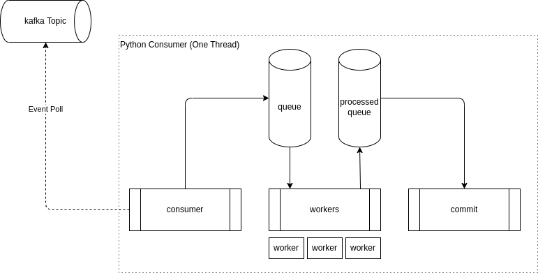

High-Throughput Python Consumer
The diagram below shows the architecture to build a high-throughput python consumer based on asyncio, non-blocking and with only one thread.

This architecture was projects to be eficient and non-blocking, so, the base tools used to this implementation are asyncio and aiokafka.
In this architecture was created 3 main concurrent tasks, that are:
-
consumer: This task is responsible to always
pollthe events in kafka topic and push the event to asyncio queue. -
workers: (Worker pool) This task is responsible for get the event from
queue, to process the events and push the event toasyncio processed queue. The number of workers is configurable and we can create 1, 2 or N workers to process the events concurrently without blocking the consumer task or commit task. -
commit: This task is responsible to get processed event from
asyncio processed queueand commit the latest offset to Kafka.
With this architecture it is possible to consume, process and commit the messages in a concurrent way using only one thread. It allows us to process a lot of IO/bound tasks in a non-blocking way, saving lots of memory (compared to creating many threads) and using the full power of only one thread.
Code
# lifecycle.py
import asyncio
import signal
class LifecycleController:
def __init__(self) -> None:
self._shutdown = asyncio.Event()
def interrupt(self):
self._shutdown.set()
def is_alive(self):
return not self._shutdown.is_set()
async def wait(self):
await self._shutdown.wait()
def setup_signals(self):
loop = asyncio.get_running_loop()
loop.add_signal_handler(signal.SIGINT, self.interrupt)
# consumer.py
import asyncio
import logging
import uuid
from abc import ABC, abstractmethod
from collections import defaultdict
from typing import Optional
from aiokafka import AIOKafkaConsumer
from aiokafka.structs import ConsumerRecord, OffsetAndMetadata, TopicPartition
from config import AsyncKafkaConsumerConfig
from lifecycle import LifecycleController
logger = logging.getLogger(__name__)
class AsyncKafkaConsumer(ABC):
_topic: str
_batch_commit: int
_lifecycle: LifecycleController
_max_concurrency: int
_config: dict
_consumer: AIOKafkaConsumer
_queue: asyncio.Queue
_queue_processed: asyncio.Queue
def __init__(
self,
topic: str,
bootstrap_servers: str,
group_id: Optional[str] = None,
batch_commit: int = AsyncKafkaConsumerConfig.BATCH_COMMIT,
max_concurrency: int = AsyncKafkaConsumerConfig.MAX_CONCURRENCY,
config: dict = {},
):
self._topic = topic
self._batch_commit = batch_commit
self._lifecycle = LifecycleController()
self._max_concurrency = max_concurrency
self._queue = asyncio.Queue(maxsize=AsyncKafkaConsumerConfig.QUEUE_MAXSIZE)
self._queue_processed = asyncio.Queue()
self._config = AsyncKafkaConsumerConfig.DEFAULT_CONFIGS
if config:
self._config = config
self._config["group_id"] = group_id or str(uuid.uuid4())
self._config["bootstrap_servers"] = bootstrap_servers
@abstractmethod
async def process(self, msg: ConsumerRecord):
pass # pragma: no cover
async def init(self):
pass # pragma: no cover
async def fail(self, msg: ConsumerRecord, exc: Exception):
pass # pragma: no cover
async def _init(self):
self._lifecycle.setup_signals()
await self.init()
async def _fail(self, msg: ConsumerRecord, exc: Exception):
try:
await self.fail(msg, exc)
except Exception as exc:
logger.exception(exc)
async def _task_consume(self):
await self._consumer.start()
while self._lifecycle.is_alive():
msg = await self._consumer.getone()
await self._queue.put(msg)
async def _task_worker(self):
while self._lifecycle.is_alive():
msg = await self._queue.get()
try:
await self.process(msg)
await self._queue_processed.put(msg)
except Exception as exc:
await self._fail(msg, exc)
finally:
self._queue.task_done()
async def _commit(self, offset_map: dict[TopicPartition, list]):
offsets = {}
for key, offset_list in offset_map.items():
last_offset = max(offset_list)
offsets[key] = OffsetAndMetadata(last_offset + 1, "")
await self._consumer.commit(offsets=offsets)
async def _task_commit(self):
offset_map = defaultdict(list)
processed_count = 0
try:
while self._lifecycle.is_alive():
msg = await self._queue_processed.get()
key = TopicPartition(msg.topic, msg.partition)
offset_map[key].append(msg.offset)
processed_count += 1
if processed_count >= self._batch_commit:
await self._commit(offset_map)
offset_map.clear()
processed_count = 0
self._queue_processed.task_done()
except asyncio.CancelledError:
if offset_map:
await self._commit(offset_map)
async def _run(self):
self._consumer = AIOKafkaConsumer(self._topic, **self._config)
await self._init()
tasks = [asyncio.create_task(self._task_consume())]
if not self._config.get("enable_auto_commit"):
tasks.append(asyncio.create_task(self._task_commit()))
for _ in range(self._max_concurrency):
tasks.append(asyncio.create_task(self._task_worker()))
try:
await self._lifecycle.wait()
finally:
logger.debug("Cleanup tasks")
self._lifecycle.interrupt()
for task in tasks:
task.cancel()
await asyncio.gather(*tasks, return_exceptions=True)
await self._consumer.stop()
logger.debug("Consumer completed")
async def _run_for_seconds(self, end_seconds: int):
try:
await asyncio.wait_for(self._run(), timeout=end_seconds)
except asyncio.TimeoutError:
pass
def run(self, end_seconds: Optional[int | float] = None):
if end_seconds:
asyncio.run(self._run_for_seconds(end_seconds))
else:
asyncio.run(self._run())
# usage.py
from consumer import AsyncKafkaConsumer
from aiokafka.structs import ConsumerRecord
class Consumer(AsyncKafkaConsumer):
counter = 0
async def process(self, msg: ConsumerRecord):
self.counter = msg.offset
consumer = Consumer("test-topic", "localhost:9092")
consumer.run()